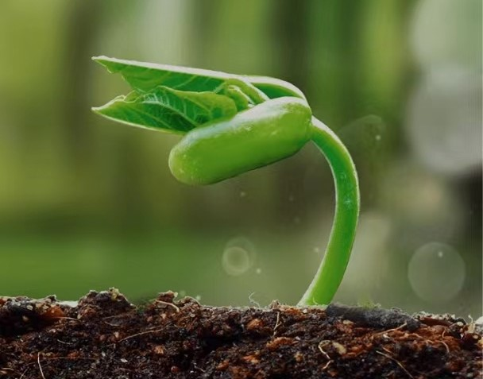
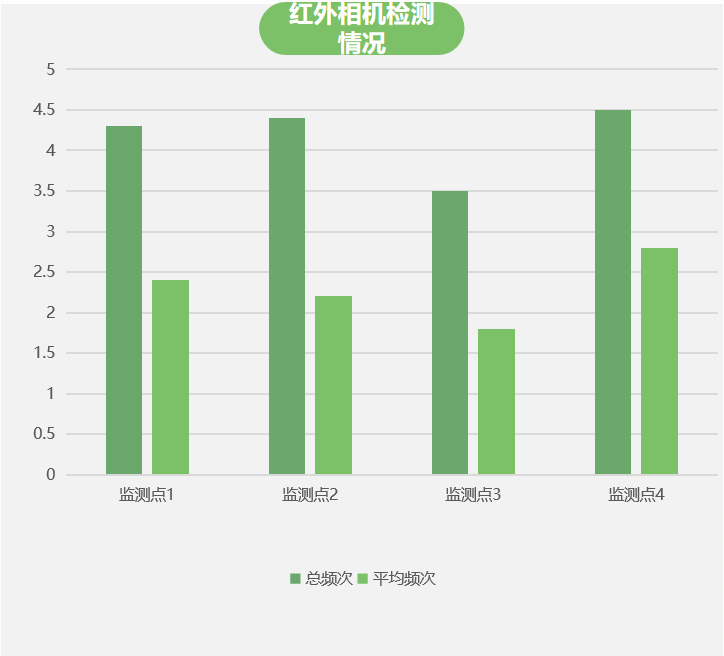
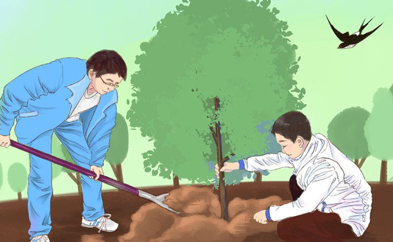

-

生物多样性
林的海洋
河北塞罕坝国家级自然保护区总面积为20029.8公顷，属于森林生态系统类型自然保护区，主要保护对象为：（1）森林与草原交错地带生态系统
河的源头
滦河、辽河水源地
花的世界
其中乔木10种、灌木28种，多年生草本植物333种，一、二年生草本植物86种。其中有药用植物319种；饲用植物50种，食用植物24种，观赏植物55种
鸟的天堂
黑鹳、金雕等珍稀濒危动植物物种
-

实际操作-技术
红外相机技术
红外相机技术通过自动相机系统获取野生动物照片、视频等图像数据，在自然保护区监测自然保护区物种资源编目中具有广泛的应用前景
-

实际操作-实践
实地勘察与专家咨询
2022年8月份前往塞罕坝实地考察，采集数据，收集照片。 本篇文章也根据专家的观点进行分析处理，简单易行，应用方便。为生物多样性不足的地方走出来详细回答。
文献综述
在本作品中的关于塞罕坝的动植物资料、地理环境、地理方位等专业信息均是参考、阅读、归纳、整理《塞罕坝机械林场基本情况》得出的结论。

科技赋能 多法齐施
ku nan bu duan fen dou bu zhi